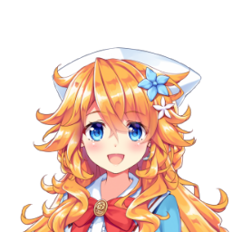
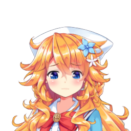
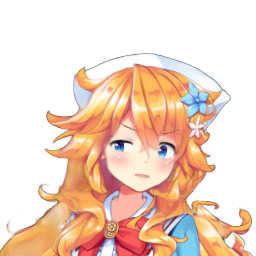
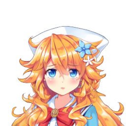

\(
\def\sc#1{\dosc#1\csod}
\def\dosc#1#2\csod{{\rm #1{\small #2}}}
\)
キャラクター画像一枚で
プラムック・カンガーン
上の動画中のキャラクターはバーチャルYouTuberまたはそれに関連したキャラクターです。この記事中の画像や映像は彼らのファンアート・二次創作です。
[footnote]
私は２０１９年に一枚のキャラクターの正面画像を動かすニューラルネットワークのシステム を作りました。しかし、顔を回転することを除くと、そのシステムは目と口を閉じることしか出来ませんでした。今回はそのシステムに新しいネットワークを追加することで、キャラクターが表現できる目と口の形を増やし、さらに眉毛と目の虹彩も動かせるようにしました。それにより出力される画像はより表情豊かになり、様々な感情も表せるようになりました。


入力画像 嬉び 悲しみ 怒り


うんざり 見下し／煽り 上目遣い ガンギマリ顔
新しいシステムでは、3Dモデル用のモーションデータを用いてキャラクターの2D画像を動かすことが出来ます。
VIDEO
自分の動きをリアルタイムにキャラクターに反映させるツールも作りました。
VIDEO
上述のツールを改造して、自分の動作を記録することで、後から複数のキャラクターに歌を歌わせたりもしました。
VIDEO
1 はじめに
簡単にバーチャルYouTuber になれることを目標に、私は２０１９年に一枚のキャラクターの正面画像を動かすニューラルネットワークのシステム を作りました。そのシステムでは６次元のポーズベクトル を指定することにより、キャラクターに６種類の動きをつけられます。しかし、これは実践的だとは言えません。システムが出力する画像は目と口を閉じることしか出来ないのに対し、企業様のバーチャルYouTuberは表情が豊かです。目や口をの様々な形に動かすこと出来て、眉毛や目の虹彩も動かせます。私はシステムを改善するべく２０２０年はそれらの動きに対応するための研究に励みました。この記事はその結果のレポートです。
2 手法の要約
一昨年に作ったシステムの入力は二つあります。一つはキャラクターの正面画像、もう一つはポーズを指定するための６次元のポーズベクトルです。それらを受け取り、システムは指定されたポーズを取ったキャラクターの画像を出力します。時間の経過と共にポーズベクトルを変更させることでアニメーションを生成することも出来ます。ポーズベクトルは６次元のベクトルなので、キャラクターは６種類の動きが出来ます。しかし、顔を回転させられることを除くと、口を目を閉じることしか出来ません。
キャラクターにポーズを取らせる過程は２つのステップに分解され、それぞれが個別のネットワークを用いて行われます。顔モーファー (face morpher)というネットワークはキャラクターの表情を変更し、顔ローテイター (face rotator)は顔を回転します。
図２―１： ２０１９年に作ったシステムの構成。キャラクターはKizuna AI (© Kizuna AI)。
動きの種類を増やすためには、前に使ったデータセットより大きいものを準備しなければなりません。以前に収集した８０００個の３Dモデル から、共通する顔の部分の動きを３９種類特定し、それらが含まれるデータセットを作りました。（どういう動きなのかはこちら に書いてあります。）これは企業VTuberの顔の可動な部分（眉毛、虹彩、瞼、口）を網羅しており、結果的にポーズベクトルの次元数は６から４２に変わりました
大きくなったポーズベクトルに対応するため、顔モーファーを作り直しました。新しい構成は以下の図の通りです。
図２―２： 新しいフェイスモーファーは２つのステップで表情を変更させます。一番目のステップは眉毛を変形し、二番目は目と口を変形します。キャラクターはときのそら (© Tokino Sora Ch.)です。
新しい顔モーファーは眉毛モーファー (eyebrow morpher)と目と口モーファー (eye & mouth morpher)という２つのサブネットワークで構成されています。それぞれのサブネットワークは顔の特定の部分しか変形しません。ポーズベクトルは個々のサブネットワークに入力出来るように分解されます。
2.1 眉毛モーファー
眉毛モーファーは先ず眉毛セグメンター (eyebrow segmenter)というサブネットワークを用いて眉毛を入力画像から切り抜きます。次に眉毛ワーパー (eyebrow warper)という別のサブネットワークを使って、切り抜いた眉毛を変形し、その結果を顔の画像へ戻します。
その二つのサブネットワークは構成が似ています。エンコーダーデコーダーネットワーク(encoder-decoder network)を用いて入力画像と（ネットワークによってはなくてもよい）ポーズベクトルを特徴テンソルに変換し、それを使っていくつかのステップで入力画像を処理します。画像処理のステップは３種類あります。
部分的画像変更： 特徴テンソルからアルファマスクと新しい画像を生成し、それらを使ったアルファブレンド で入力画像を変更させます。新しい画像は入力画像との差分を表し、アルファマスクはその差分を入力画像のどこへ適用するかを表します。Pumarolaらはこの画像処理の手法で写真に映った人間の表情を変更します[2018] 。結合： 特徴テンソルでアルファマスクを作り、アルファブレンドで二枚の画像を結合します。ワープ(warp)： 特徴テンソルはアピアランスフロー (appearance flow)という出力画像の各画素へ入力画像のどこからコピーするかを示すマップに変換し、それに従って入力画像から新しい画像を生成します[Zhou et al. 2016] 。
眉毛セグメンターは二種類の部分的画像変更を行い、眉毛ワーパーは切り抜いた眉をワープして、変形された眉毛を顔画像と結合させて再び顔へ戻します。ネットワークの構成は以下の図の通りです。
図２―４： 眉毛セグメンターの構成。
図２―５： 眉毛ワーパーの構成。
シャープな眉毛を生成するには、眉毛を他の顔の部分と別に処理することが重要だと発見しました。一つのネットワークで全部の顔の部分を変更させると眉毛はぼやけてしまいます。上述のネットワークを使用するのは眉毛の画素を保つバイアスを導入することであり、より鮮明な眉毛をもたらします。
図２―６： 一つのネットワークで全部の顔の部分を変形する手法の効果とこの記事の別のネットワークで眉毛を処理する手法の効果の比較。
2.2 目と口モーファー
このネットワーク構成は上述の二つのネットワークに似ています。入力画像と目と口に該当するポーズベクトルの部分をエンコーダーデコーダへ渡して特徴テンソルを生成し、その結果を用いて以下のステップで画像処理を行います。
目と虹彩をワープします。
上のステップの結果を部分的画像変更でリタッチします。
再度、部分的画像変更で瞼を変形させます。
図２ー７： 目と口モーファーの構成。
この複雑な構成は試行錯誤して調整を行った結果です。一番目のステップのワープは虹彩の模様を保存するのに欠かせません。部分的画像変更で虹彩を変形させると描かれた模様が失われます。
図２－８： 部分的画像変更で虹彩を変形した結果とこの記事のワープで虹彩を変形した結果の比較。キャラクターは
ウェザーロイド Airi (© Weathernews Inc.)。
そして、閉じた瞼に「シミ」を生じさせないために、最後に部分的画像変更を使用して瞼を処理することが必要です。最後のステップを除けば、瞼は最初のステップのワープによって変形されることになり、目の近くにある細いラインが潰れ、結果として瞼が汚れる傾向にあります。
図２－９： ワープで瞼を変形した結果とこの記事の部分的画像変更で瞼を変形する結果の比較。ワープの結果では瞼にシミが出来ました。これはネットワークが正解画像の赤い枠にある短い線を下へと引っ張って形を壊した結果です。一方、この記事で提案する手法では単色で瞼が塗られ、汚れのない画像が出力されました。キャラクターは
ヤマトイオリ (©株式会社アップランド)。
3 結果
新しい顔モーファーを含んだシステムを使って、２００名強のVTuberの顔アニメーションを生成しました。それらをアイキャッチャー にまとめましたが、以下でも視聴出来ます。
入力画像
アニメーション
愛園愛美
相羽ういは
赤羽葉子
朝日南アカネ
飛鳥ひな
安土桃
天宮こころ
雨森小夜
アルス・アルマル
アンジュ・カトリーナ
家長むぎ
出雲霞
戌亥とこ
イブラヒム
宇志海いちご
卯月コウ
海夜叉神
エクス・アルビオ
えま★おうがすと
エリー・コニファー
える
御伽原江良
小野町春香
甲斐田晴
加賀美ハヤト
語部紡
叶
北小路ヒスイ
金魚坂めいろ
ギルザレンIII世
葛葉
久遠千歳
来栖夏芽
グウェル・オス・ガール
郡道美玲
剣持刀也
弦月藤士郎
三枝明那
桜凛月
笹木咲
椎名唯華
シェリン・バーガンディ
シスター・クレア
静凛
渋谷ハジメ
白雪巴
ジョー・力一
周央サンゴ
健屋花那
鈴鹿詩子
鈴木勝
鈴原るる
鈴谷アキ
雪汝
瀬戸美夜子
空星きらめ
鷹宮リオン
月ノ美兎
東堂コハク
轟京子
ドーラ
長尾景
名伽尾アズマ
奈羅花
西園チグサ
ニュイ・ソシエール
葉加瀬冬雪
八朔ゆず
花畑チャイカ
早瀬走
葉山舞鈴
春崎エアル
樋口楓
伏見ガク
フミ
文野環
フレン・E・ルスタリオ
不破湊
ベルモンド・バンデラス
星川サラ
本間ひまわり
舞元啓介
魔界ノりりむ
ましろ
町田ちま
魔使マオ
黛灰
メリッサ・キンレンカ
モイラ
物述有栖
森中花咲
矢車りね
社築
山神カルタ
勇気ちひろ
夕陽リリ
雪城眞尋
ユードリック
夢月ロア
夢追翔
夜見れな
ラトナ・プティ
リゼ・ヘルエスタ
緑仙
竜胆尊
ルイス・キャミー
レヴィ・エリファ
童田明治
アーニャ・メルフィッサ
アイラニ・イオフィフティーン
赤井はあと
アキ・ローゼンタール
アステル・レダ
天音かなた
アユンダ・リス
アルランディス
戌神ころね
兎田ぺこら
潤羽るしあ
大神ミオ
大空スバル
尾丸ポルカ
がうる・ぐら
鏡見キラ
影山シエン
奏手イヅル
岸堂天真
桐生ココ
獅白ぼたん
白上フブキ
不知火フレア
白銀ノエル
小鳥遊キアラ
角巻わため
常闇トワ
百鬼あやめ
夏色まつり
一伊那尓栖
猫又おかゆ
パヴォリア・レイネ
花咲みやび
姫森ルーナ
宝鐘マリン
星街すいせい
魔乃アロエ
湊あくあ
桃鈴ねね
ムーナ・ホシノヴァ
紫咲シオン
友人A（えーちゃん）
夕刻ロベル
雪花ラミィ
癒月ちょこ
夜空メル
律可
ワトソン・アメリア
因幡はねる
稲荷くろむ
宇森ひなこ
風見くく
銀猫ななし
黒猫ななし
虎城アンナ
西園寺メアリ
獅子王クリス
島村シャルロット
白宮みみ
堰代ミコ
瀬島るい
周防パトラ
蒼月エリ
宗谷いちか
灰猫ななし
羽柴なつみ
日ノ隈らん
飛良ひかり
三毛猫ななし
柚原いづみ
龍ヶ崎リン
犬山たまき
愛宮みるく
熊谷タクマ
白雪みしろ
姫咲ゆずる
べっぴー
鬼灯わらべ
夢乃リリス
KMNZ Lita
KMNZ Liz
伊東ライフ
神楽めあ
ケリン
ちくわ
しぐれうい
竹花ノート
天開司
兎鞠まり
なつめえり
名取さな
花雲くゆり
ふくやマスター
聖女れりあ
まぐろな
幽ヶ崎海愛
ユキミお姉さん
楪穂波
キョウモギョウザ
ギルザレンIII世のコスプレする名取さな
ママつり
ママねる
Waifu #0
Waifu #1
Waifu #2
Waifu #3
Waifu #4
図３ー１： システムで生成されたアニメーション。
以下は７つの表情をさせた一部のキャラクターの画像です。
上の図はシステムの汎用性を証明していると思います。男性のキャラクターにも女性のキャラクターにも対応でき、大きくて丸い目から小さくて細い目まで処理出来ました。髪の毛に部分的に隠された目も眼鏡越しに透けて見える目も問題なく変形されています。入力画像の口が閉まってる場合、前のシステムでは口を開けられない仕様でしたが、今回はそれなりに適切な形で口が開いてくれました。
システムのもう一つの長所は柔軟性です。いかなるポーズベクトルを出力する装置やプロセスとでも繋げられます。そのお陰で、私はシステムを使っていくつかのコンテンツとツールを作りました。
先ず、スライダーでキャラクターの表情と顔向きを変更するツールを作りました。
VIDEO
次に、3Dモデル用のモーションをポーズベクトルのシーケンスに変換するプログラムを書き、３Dモーション通りに２Dイラストレーションを動かせるようにしました。さらにそのプログラムを使って、４本のミュージックビデオを制作しました。
VIDEO
VIDEO
VIDEO
VIDEO
自分の動きをリアルタイムにキャラクターへ反映するツールも開発しました。iFacialMocap というiOSのアプリを用いて、iPhoneのフロントカメラの映像から５０のブレンドシェイプのパラメータを推理しPCへ送ります。それを受け取りポーズベクトルへと変換してネットワークに渡すことで、キャラクターにカメラへ映った人物のポーズを取らせることが出来ます。
VIDEO
上述のツールを改造して動きを記録出来るようにした後、外郎売を唱えたり、朗読したり、歌を口パクしたりするモーションを収録しました。そのモーションを複数のキャラクターに反映し、以下のデモンストレーションビデオを作りました。
VIDEO
VIDEO
VIDEO
委員長おめでとうの歌 を口パクする
VIDEO
GOMIKASU-Original Mix- を口パクする
VIDEO
ばかみたい (龍が如くシリーズの楽曲)を口パクする
上の動画では、キャラクターが私の顔と口の動きをうまく模倣できていることが御覧いただけたかと思います。私のシステムは以下のツイートにある動画のような「だめだねミーム」でよく知られたSiarohinらのシステム[Siarohin et al. 2019] と違い、顔の形を歪めずにイラストの美しさを保ちます。
4 おわりに
アニメキャラクターの表情を変更するためのニューラルネットワークの新しい構成を紹介しました。この新しいネットワークは感情を表すのに欠かせない顔の部分（眉毛・瞼・虹彩・口）を全部変形させられ、キャラクターに様々な表情と質のいいリップシンクをさせることが出来ます。口と目を閉じさせることしか出来ない２０１９年のネットワークと比べ、機能が大幅に追加されました。新しいネットワークを含んだシステムは、前のシステムと同じく、どんなポーズベクトルのデータソースとでも組み合わせることができ、それを使って様々なコンテンツとツールを作ることが出来ました。
紹介した手法の制限といえば、3Dモデルが出来る動きしか画像に反映させない点です。そのため、まだ人間の顔の動き全てをアニメキャラクターの画像に模倣させられません。しかし、点の大きさまで虹彩を縮める等の人間には出来ない動きをさせることは可能です。
このプロジェクトは前のシステムをより実践的にしたいという動機から生まれました。表情の乏しさの問題は確かに解決しましたが、残っている問題はたくさんあります。正面画像では見えないが顔が回転して見えてくる部分はぼやけますし、入力画像には様々な制限があって使い勝手がよくありません。また、サブネットワークの数が増えてモデルのファイルサイズは360MBから600MBになりました。これらの問題は次回のプロジェクトで解決したいと思います。
最後に、この記事は簡潔さを重んじて書かれたため、文献レビュー、データセットの作り方、先行研究との比較等の詳細を大いに省いています。それらは記事の完全版 に書いてありますので、ご興味ありましたら是非読んでみてください。（申し訳ございませんが、完全版は英語です。）
お断り
私自身はグーグル合同会社でソフトウェアエンジニアをやらせていただいてますが、このプロジェクトは仕事と全く関係ありません。会社のリソースを使わずに自由時間でやった趣味に過ぎません。グーグルに就職する前は大学院でコンピュータグラフィックスを研究したことはありますが、今は普通のソフトウェアエンジニアでグーグルマップのバックエンドを開発して生計を立てています。この記事に書いてある見解は私個人のものであり、会社の見解ではありません。
スペシャルサンクス
Yanghua Jin 様、Alice Maruyama 様、Cory Li 様、Shinji Ogaki 様、Panupong Pasupat 様、Jamorn Sriwasansak 様、Yingtao Tian 様、Mamoru Uehara様、Jayakorn Vongkulbhisal 様に感謝申し上げます。
更新
Project Bougainvillea


{kind=link}
{kind=link}
{kind=link}
{kind=link}
{kind=link}
{kind=link}